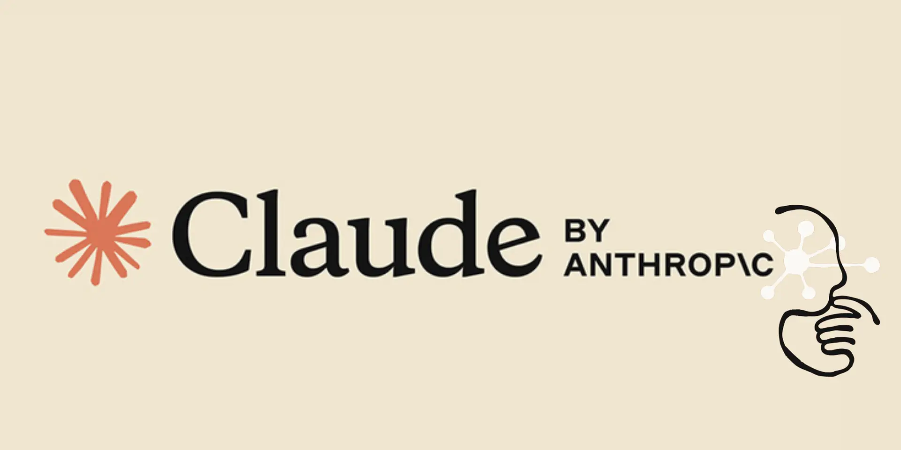

OpenAI 發布 GPT-6 Cyber，資安能力評為最高級
OpenAI 於 11 月 5 日推出 GPT-6 Cyber，是 GPT-6 Astra 的資安特化版本，網路安全能力被評為最高級「Critical」。該模型在 ExploitGym 基準取得 48.5% 的得分，較前代的 32.1% 大幅提升，並協助發現 81 個 Firefox 高危漏洞與 948 個 Linux 核心漏洞利用。GPT-6 Cyber 僅開放給通過 Daybreak Red 審核的防禦方客戶，經 API 與 Codex 使用，一般用戶無法取得。這種受限的發布方式反映 OpenAI 對強大攻擊性資安能力的審慎態度，也顯示前沿模型在攻防兩端的能力差距正在快速拉大。